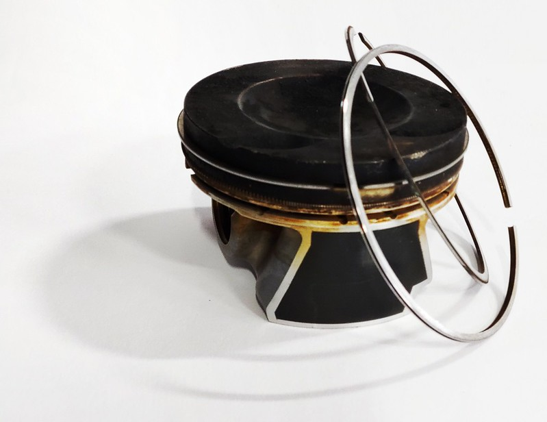

servis vozů
Jsme pro Vás od pondělí do pátku 7:30 - 17:00 na adrese 664 34 Kuřim, Tyršova
S čím potřebujete pomoci?
- servisní
prohlídky automobilů, běžné opravy
- kompletní opravy
po nehodách - jsme smluvní opravnou
po pojišťovny Generali, Kooperativa, Česká
pojišťovna
- náhradní
vůz:
poskytneme vůz (aktuálně Škoda Fabia 3,
Škoda
Octavia 3) po dobu opravy jak po nehodě, tak i při běžné
opravě
a pravidelných prohlídkách
- motor 1,8 TSI: vyvinuli jsme vlastní komponenty pro opravu
vysoké spotřeby
oleje u tohoto motoru
- čistění a plnění klimatizace
chladivem, desifekci vzduchových vedení
desinfekčními prostředky
- emise: máme vlastní stanici měření emisí
v rozsahu značky ŠKODA (palivo: benzín).
Provádíme přípravu i
zajištění externí
prohlídky STK
- pneuservis:
nabízíme kompletní služby, včetně
možnosti
uskladnění sezónních pneumatik i
kompletních kol, i s mytím a
vyvážením
- další služby: renovace světel,
motorová brzda
MODEL
TSI
V naší firmě jsme vyvinuli vlastní
komponenty pro opravu vysoké spotřeby oleje u tohoto motoru.

motor 1,8 TSI:
- oprava spočívá v
úpravě
pístů a montáži speciálních
pístních kroužků, které
eliminují
problém se spotřebou oleje. Časová
náročnost
opravy je cca 2 týdny